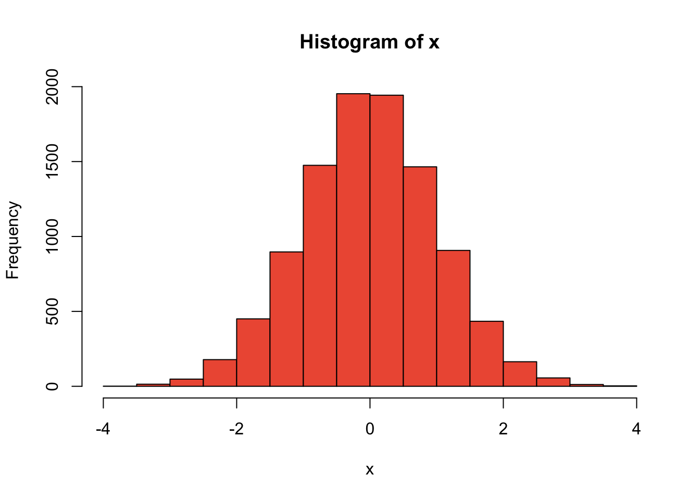
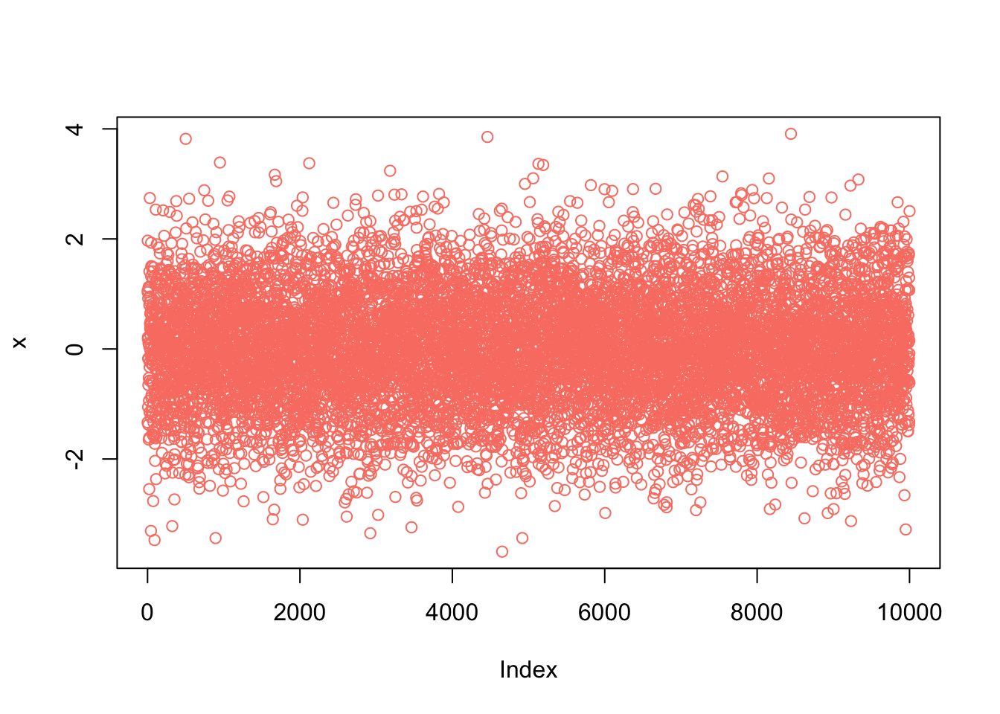
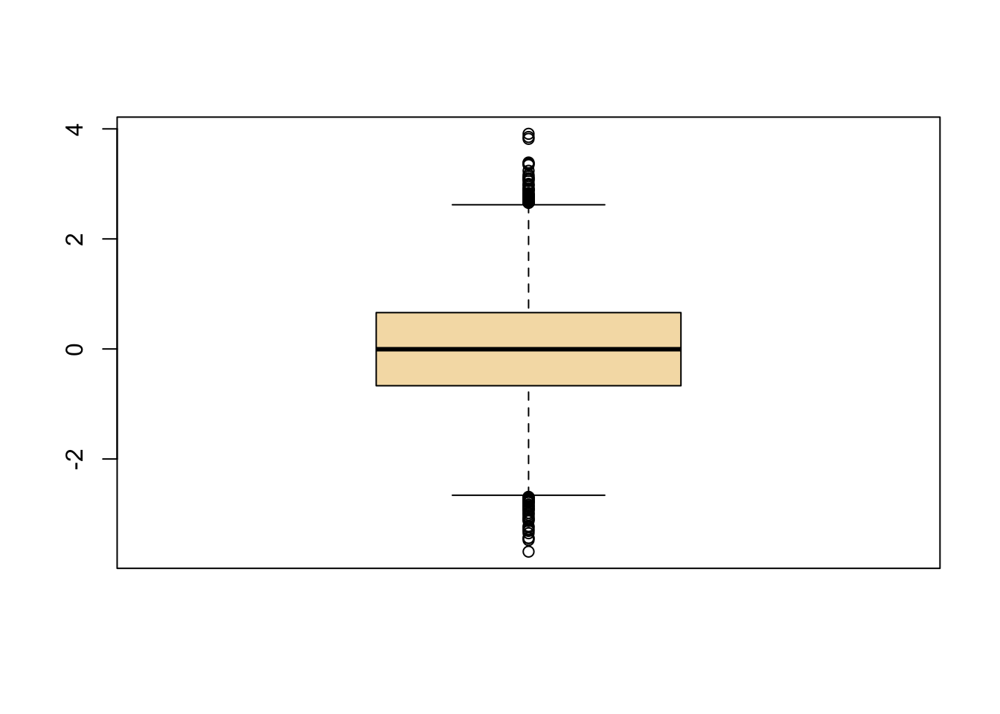

Chapter 3 Vectores
R permite manejar datos dentro de estructuras para poder trabajarlos, estas estructuras pueden ser: - Vector: Es de una sola dimensión y solo permite almacenar datos del mismo tipo. - Matriz: Es un arreglo en dos dimensiones y permite ingresar datos del mismo tipo. - Data Frame: Similar a la matriz por ser también de dos dimensiones, solo que este arreglo permite distintas clases de datos. - Lista: Es de una sola dimensión como el vector, la diferencia que es que una lista permite incorporar diferentes tipos de datos.
3.1 Contenido
Para conocer el contenido de una variable, sólo es necesario poner la variable y presionar enter (sesión interactiva). En el caso de estar en un script es necesario usar la función print()
Ejemplo:
x<-3
print(x)## [1] 33.2 Vectores en R
Un vector es una colección de datos del mismo tipo, siempre del mismo tipo, no es posible mezclarlos. Los elementos contenidos dentro de un vector son conocidos como componentes y pueden ser del tipo lógico, caracteres, numéricos o integer.
3.3 Definición
Para definir un vector se utiliza la función c(), que significa combine.
Existen dos formas de definir un vector: Extensiva y Secuencia.
3.3.1 Definición extensiva
La forma extensiva para definir un vector considera que los elementos situados dentro del paréntesis tienen que estar separados por comas.
Ejemplo:
vector_numerico <- c(1, 3, 5, 7) # vector numérico
vector_texto <- c("a", "b", "c", "d") # vector de texto
vector_logico <- c(TRUE, FALSE, TRUE) # vector lógico / booleano3.3.2 Definición en secuencia
3.3.2.1 Uso de c()
En algunas ocasiones definir de manera extensiva puede resultar muy poco eficiente, sobre todo para vectores que contengan una gran cantidad de elementos en secuencia, para ello se definen en forma de secuencia empleando el operador :.
Ejemplo: Un vector que tenga los primeros 100 números enteros
x <- c(1:100)
x## [1] 1 2 3 4 5 6 7 8 9 10 11 12 13 14 15 16 17 18 19 20 21 22 23 24 25 26 27 28 29 30 31
## [32] 32 33 34 35 36 37 38 39 40 41 42 43 44 45 46 47 48 49 50 51 52 53 54 55 56 57 58 59 60 61 62
## [63] 63 64 65 66 67 68 69 70 71 72 73 74 75 76 77 78 79 80 81 82 83 84 85 86 87 88 89 90 91 92 93
## [94] 94 95 96 97 98 99 1003.3.2.2 Uso de seq()
Otra alternativa es la función seq() que significa sequence y es una generalización del operador :.
Ejemplo:
x <- seq(1,100)
x## [1] 1 2 3 4 5 6 7 8 9 10 11 12 13 14 15 16 17 18 19 20 21 22 23 24 25 26 27 28 29 30 31
## [32] 32 33 34 35 36 37 38 39 40 41 42 43 44 45 46 47 48 49 50 51 52 53 54 55 56 57 58 59 60 61 62
## [63] 63 64 65 66 67 68 69 70 71 72 73 74 75 76 77 78 79 80 81 82 83 84 85 86 87 88 89 90 91 92 93
## [94] 94 95 96 97 98 99 100Esta función permite generar secuencias numéricas de distintas clase y por diferentes rangos.
Ejemplo: Una secuencia que vaya desde -12 hasta 30 en un rango de 3, es decir, -12, -9, -6, …, 27, 30:
x <- seq(from=-12,to=30,by=3)
x## [1] -12 -9 -6 -3 0 3 6 9 12 15 18 21 24 27 30NOTA Se puede omitir from, to y by mientras se sigan colocando los valores en el mismo orden.
Ejemplo:
y <- seq(0,1,0.1)
y## [1] 0.0 0.1 0.2 0.3 0.4 0.5 0.6 0.7 0.8 0.9 1.0NOTA Si queremos cambiar el orden, debemos necesariamente ponerlos. Ejemplo:
z <- seq(by=0.1, to =1, from=0.5)
z## [1] 0.5 0.6 0.7 0.8 0.9 1.03.4 Longitud de un vector
La longitud de un vector se refiere al número de elementos que contiene. Para conocer ese dato se emplea la función length()
Ejemplo:
s <- (1:5)
length(s)## [1] 53.5 Elementos de un vector
Para acceder a elementos de un objeto con indices (componentes que tienen una posición asignada), debemos usar corchetes []. Los corchetes pueden contener posiciones consecutivas o no consecutivas.
3.5.1 Elementos consecutivos
Se definen el rango de las posiciones a seleccionar, para ello se emplea el operador :
Ejemplo:
#Se define el vector con la variable "x"
x <- c("Muchos", "años" ,"después" ,",", "frente", "al" ,"pelotón")
#Elegir desde el primer hasta el cuarto elemento del objeto "x"
x[1:4]## [1] "Muchos" "años" "después" ","Ejemplo:
x <- c(1,2,3,5,8,13,21)
x[3:6]## [1] 3 5 8 133.5.2 Elementos no consecutivos de un vector
Las posiciones a seleccionar se colocan en un vector separadas por ,, a su vez este vector se coloca dentro de los corchetes.
Ejemplo:
#Se define el vector "x"
x <- c("Hola", "Bien", "cómo", "!", "estás", ":(", "?")
#Se indica dentro de un nuevo vector que se seleccionen las posiciones 1, 3, 5 y 7 del vector "x".
x[c(1,3,5,7)]## [1] "Hola" "cómo" "estás" "?"NOTA: No es necesario que estén en orden
Ejemplo:
x<-c(1,2,3,5,8,13,21)
x[c(2, 7, 4)]## [1] 2 21 53.5.3 Excluir elementos de un vector
Para omitir algun o un conjunto de elementos de un vector, se emplea el signo menos dentro de los corchetes [- ]
Ejemplo:
#Se define el vector "x"
x <- c(1,2,3,5,8,13,21)
#Dentro del corchete indicamos la posición que se quiere omitir
x[-4]## [1] 1 2 3 8 13 21#Cuando se quiere omitir un conjunto de elementos, se definen las posiciones dentro de un vector
x[-c(2, 7, 4)] # Todos menos el segundo , séptimo y cuarto elemento## [1] 1 3 8 13¿Esto qué hace?
x[-length(x)]## [1] 1 2 3 5 8 13NOTA Este comando [- ] no elimina elementos de un vector sólo los selecciona y omite. Sin embargo, el vector original continua intacto.
x <- c(1,2,3,5,8,13,21)
x[-6] ## [1] 1 2 3 5 8 21x # Estoy intacto## [1] 1 2 3 5 8 13 213.6 Reasignar elementos de un vector
Se pueden asignar nuevas posiciones y valores a un vector previamiente definido
Ejemplo:
#Se define el vector "x"
x <- c(88,5,12,13)
#Agregamos el valor "168" en la posición 4. Intenta explicar paso a paso la siguiente línea de comando.
x <- c(x[1:3],168,x[4])
x## [1] 88 5 12 168 13Se puede definir un vector vacío y luego “llenarlo” asigando una posición a los componentes.
x<-c()
x # Soy un vector vacío :(## NULLx[1]<- 2
x[2:5]<-c(56,78,90,12)
x # Ahora ya no :)## [1] 2 56 78 90 123.7 Repetición de elementos de un vector
La función rep(), que viene del inglés repeat, nos permite repetir elementos en un vector dado.
El comando rep() sigue el siguiente formato rep(valor, n veces).
Ejemplo:
#Repite 5 veces el valor "3" y asignalo a la variable "x"
x <- rep(3,5)
x## [1] 3 3 3 3 3#También se pueden repetir un conjunto de valores una vez que sean colocados dentro de un vector
y <- rep(c(1,2,3,5),3) #Repite 3 veces los valores 1, 2, 3 y 5.
y## [1] 1 2 3 5 1 2 3 5 1 2 3 5Ejemplo:
primos <- c(1,2,3,5,7,11)
z <- rep(primos,4)
z## [1] 1 2 3 5 7 11 1 2 3 5 7 11 1 2 3 5 7 11 1 2 3 5 7 11Dentro del comando rep() se encuentra la opción each, la cual permite definir la frecuencia de repetición.
Ejemplo:
x<-c(1,2,3,4)
y<-rep(x,each=2)
y## [1] 1 1 2 2 3 3 4 43.8 Uso de funciones any() y all()
Las funciones any() algún y all() todos permiten conocer si alguno o todos los elementos de un vector cumplen cierta condición.
El resultado obtenido siempre será un valor booleano: TRUE o FALSE
Ejemplo:
x <- 1:15
any(x > 7.5)## [1] TRUEany(x > 19.76)## [1] FALSEany(x >= 15)## [1] TRUEall(x > sqrt(100))## [1] FALSEall(x>0)## [1] TRUEEjercicios
- Dado un vector x, escribe un código que determine si todos los elementos del vector son iguales a cero utilizando la función all().
- Escribe un código que tome un vector x y devuelva TRUE si hay algún elemento repetido en el vector, utilizando la función any().
- Dado un vector x, escribe una función que determine si todos los elementos del vector son iguales entre sí utilizando la función all().
- Escribe una función que tome dos vectores (“x” y “y”) y devuelva TRUE si ambos vectores tienen algún elemento en común, utilizando la función any().
- Escribe una función que tome dos vectores (“x” y “y”) y devuelva TRUE si todos los elementos del vector x son mayores que los elementos correspondientes en el vector y, utilizando la función all().
- Dado un vector x, escribe una función que determine si todos los elementos del vector son menores que cero utilizando la función all().
- Escribe una función que tome dos vectores (“x” y “y”) y devuelva TRUE si al menos un elemento del vector x es mayor que los elementos correspondientes en el vector y, utilizando la función any().
- Dado un vector x, escribe una función que determine si todos los elementos del vector son iguales a un valor específico a utilizando la función all().
- Escribe una función que tome dos vectores (“x” y “y”) y devuelva TRUE si al menos un elemento del vector x es menor que los elementos correspondientes en el vector y, utilizando la función any().
3.9 Operaciones con vectores
3.9.1 Operaciones aritméticas
Al igual que en álgebra podemos definir varias operaciones que nos dejan siempre otro vector. Las operaciones se pueden realizar vector/vector o vector/escalar.
Se definen los vectores
x<-c(1,2,3)
y<-c(4,5,6)SUMA con el operador +
x + y ## [1] 5 7 9x + 2## [1] 3 4 5RESTA con el operador -
x - y## [1] -3 -3 -3x - 1## [1] 0 1 2MULTIPLICACIÓN con el operador *
x * x## [1] 1 4 9x * y ## [1] 4 10 18y * 3 ## [1] 12 15 18DIVISIÓN con el operador /
x / y## [1] 0.25 0.40 0.50y / 5## [1] 0.8 1.0 1.2EXPONENTE con los operadoradores ** o ^
x ** y## [1] 1 32 729y ^ 2## [1] 16 25 36RAÍZ CUADRADA con la función sqrt()
sqrt(y)## [1] 2.000000 2.236068 2.449490LOGARITMO con la función log()
log(x)## [1] 0.0000000 0.6931472 1.0986123NOTA CUIDADO con el tamaño de los vectores al momento de realizar operaciones entre ellos.
3.10 Operaciones con un comando
También podemos aplicar funciones para calcular con una sola instrucción varias operaciones útiles, esto nos ahorra tiempo.
Ejercicio Calcula el promedio de los números del 1 al 10.
#Respuesta muy larga
(1+2+3+4+5+6+7+8+9+10)/10## [1] 5.5Okaaaay, no es un proceso taaaaan largo pero ¿qué pasa cuando queremos calcular el promedio de 10,000 números? RIP para ello se pueden emplear los siguientes comandos min(), max(), range(), sum(), mean(), median(), sd(),quantile(),unique(),sort()
#Se define el vector que incluye mil datos
x<-rnorm(1000)
min(x) #Se obtiene el valor mínimo## [1] -3.479107max(x) #Se obtiene el valor máximo## [1] 3.411788range(x) #Da a conocer el rango en el cual se encuentran los valores, es decir el valor min y max. ## [1] -3.479107 3.411788sum(x) #Realiza la suma de todos los valores contenidos en el vector ## [1] -13.11904mean(x) #Calcula el promedio del conjunto de valores ## [1] -0.01311904median(x) #Se obtiene la mediana ## [1] -0.04818448Ejercicio ¿Qué función tienen los siguientes comandos sd() y quantile()?
Para unique() y sort() conviene tener elementos discretos más que continuos.
x <- c(rep(3,5),1:15,rep(c(1,2,3),5))
unique(x)## [1] 3 1 2 4 5 6 7 8 9 10 11 12 13 14 15x <- sample(10,10)
x## [1] 5 3 8 1 7 10 9 6 4 2sort(x)## [1] 1 2 3 4 5 6 7 8 9 103.11 Gráficos con vectores
Podemos graficar los vectores de manera inmediata en R
x<- rnorm(10000)
hist(x,col="tomato2") #Histograma: grafica la distribución de las frecuencias de los datos 
plot(x,col="salmon") #Gráfica los datos en el orden de aparición en el vector 
boxplot(x,col="wheat") #Boxplot: muestra la mediana y quantiles
3.12 Vectores con nombre
Una de las cracterísticas de R es que se puede asignar nombres a los vectores, para ello usamos la función names()
Ejemplo:
edades <- c(35,35,70,17,14) #Definimos un vector llamado "edades"
nombres <- c("Jerry","Beth","Rick", "Summer","Morty") #Definimos un vector llamado "edades", del mismo tamaño que "edades"
names(edades) <- nombres #Se nombran los elementos del vector "edades"
edades## Jerry Beth Rick Summer Morty
## 35 35 70 17 14También se selecciona de la manera usual, por ejemplo, si quiero ver cuál es la edad de Rick, debo seleccionar el elemento 3:
edades[3]## Rick
## 70Esto es muy poco eficiente y propenso al error, sobre todo con vectores muy grandes. Por ello podemos usar los nombres de los vectores:
edades["Rick"]## Rick
## 70Recuerda que los nombres S-I-E-M-P-R-E van entre comillas
edades[c("Rick","Morty")]## Rick Morty
## 70 14Ejercicios:
- ¿Cuál es el promedio de las edades, sin contar el de Beth?
- Quiten a Morty del vector, ordénenlo y guárdenlo como un nuevo objeto.
- ¿Hay alguna edad que sea mayor de 75? ¿Menor de 12? ¿Entre 12 y 20?
3.12.1 Tamaños de genomas
Ahora veamos un ejemplo más “biológico”
genomeSizeM_BP<-c(3234.83,2716.97,143.73,0.014281,12.1)NOTA Si se desea ver el tamaño en bp, simplemente multiplicamos por el valor del prefijo (Mega = 1 millón)
genomeSizeM_BP*1e6## [1] 3234830000 2716970000 143730000 14281 12100000organismo<-c("Human","Mouse","Fruit Fly","Roundworm","Yeast")names(genomeSizeM_BP)<- organismogenomeSizeM_BP## Human Mouse Fruit Fly Roundworm Yeast
## 3234.830000 2716.970000 143.730000 0.014281 12.100000¿Qué hay de diferente entre el primer vector al que le se asiganaron los tamaños de genomas & esta última versión?
RECUERDA Se pueden seleccionar elementos de un vector utilizando corchetes:
genomeSizeM_BP[1]## Human
## 3234.83Para obtener elementos consecutivos:
genomeSizeM_BP[1:4]## Human Mouse Fruit Fly Roundworm
## 3234.830000 2716.970000 143.730000 0.014281Para obtener elementos NO consecutivos:
genomeSizeM_BP[c(1,2,5)]## Human Mouse Yeast
## 3234.83 2716.97 12.10Para descartar (no eliminar, ni quitar) ciertos elementos:
genomeSizeM_BP[-c(1,3,5)]## Mouse Roundworm
## 2716.970000 0.014281Para referirnos a los elementos por el nombre asignado:
genomeSizeM_BP[c("Yeast","Human")]## Yeast Human
## 12.10 3234.83Además de algunas operaciones aritméticas se pueden calcular con la media, máximo, mediana, mínimo, suma y longitud de los vectores
Ejercicio
- Generar un vector de las edades de 10 de tus compañeros
- Asignales nombre.
- Encuentra el mínimo,máximo, media, mediana, la desviación estándar, la longitud del vector y selecciona sólo los elementos impares.
- Elimina el máximo y el mínimo y con el vector resultante realiza un histograma.
- Crea un vector de caracteres con diez nombres de especies y asocialo con su número de acceso de NCBI para su genoma en nucleótidos.
3.13 ¿Cómo lidiar con las NAs ?
Es (muy) freceunte que en bases de datos se tengan valores NA, es decir medidas que no pudieron realizarse, medidas perdidas, etc. Para ello se utiliza NA.
R trata de manera especial a las NAs
x <- c(88,NA,12,168,13)Existe una fución para determinar si un elemento es o no una NA. La función es is.na()
x <- c(88,NA,12,168,13)is.na(x)## [1] FALSE TRUE FALSE FALSE FALSESi queremos calcular ciertas funciones numéricas R no sabrá qué hacer
x <- c(88,NA,12,168,13)
mean(x)## [1] NASin emabrgo, podemos decirle a R que las omita, indicando como argumento de la función mean() na.rm=TRUE que significa na remove
x <- c(88,NA,12,168,13)
mean(x,na.rm=TRUE)## [1] 70.25¿Qué otras funciones tienen esta opción na.rm=TRUE ?
3.14 Filtrado de elementos de un vector
Podemos generar vectores de que sean subconjuntos de vectores más grandes que cumplan cierta(s) condición(es)
un_vector <- c(1,2,3,5,7,11,13,17,19)
otro_vector <- un_vector[un_vector*un_vector > 10] #Se lee el vector desde dentro hacía afuera
otro_vector## [1] 5 7 11 13 17 19Veamos paso a paso qué es lo que hace este proceso
un_vector## [1] 1 2 3 5 7 11 13 17 19un_vector*un_vector > 10 # Mira, de adentro hacía afuera## [1] FALSE FALSE FALSE TRUE TRUE TRUE TRUE TRUE TRUEindices<-un_vector*un_vector > 10
un_vector[indices]## [1] 5 7 11 13 17 19un_vector[c(FALSE,FALSE,FALSE,TRUE,TRUE,TRUE,TRUE,TRUE,TRUE)]## [1] 5 7 11 13 17 19La representación interna de los valores booleanos FALSE y TRUEson 0 y 1, respectivamente
un_vector[c(rep(0,3),rep(1,1))]## [1] 13.14.1 Filtrado con subset()
Podemos usar la función subset()para hacer lo mismo que en el caso anterior excepto que omite los NA
un_vector<-c(1,2,3,5,7,11,13,17,19)
otro_vector <- subset(un_vector,un_vector*un_vector > 10)
otro_vector## [1] 5 7 11 13 17 19Qué pasa si tenemos NAs. Si usamos el método anterior obtendríamos
un_vector<-c(1,2,3,5,7,11,NA,13,17,NA,19)
otro_vector <- un_vector[un_vector*un_vector > 10] # Leeme de adentro hacia afuera
otro_vector # Aquí salen las NAs## [1] 5 7 11 NA 13 17 NA 19En cambio con subset()
un_vector<-c(1,2,3,5,7,11,NA, 13,17,NA, 19)
otro_vector <- subset(un_vector,un_vector*un_vector > 10)
otro_vector # Aquí ya no aparecen las NAs## [1] 5 7 11 13 17 193.15 ¿Cómo podemos ver si dos vectores son iguales?
Dos vectores son iguales si elemento a elemento son idénticos.
Por lo tanto deben de ser del mismo tamaño.
RECUERDA Para probar si dos elementos son iguales se utiliza el operador de comparación == son dos signos iguales juntos, sin espacio.
No confundir con el operador = que se puede usar como operador de asiganción (aunque no es recomendable su uso. De hecho está prohibido en este curso >:(
x <- c(1,4,9,16,25)
y <- 1:5
y <- y*yx==y## [1] TRUE TRUE TRUE TRUE TRUE¿Qué pasaría si me confundo y escribo el operador de igualdad en lugar del de comparación?
y <- 5:9
y## [1] 5 6 7 8 9x = yx## [1] 5 6 7 8 9y## [1] 5 6 7 8 9Para vectores grandes puedo usar la función all() que ya vimos arriba
x <- seq(1,10000,1)
y <- seq(1,10000,1)
all(x==y)## [1] TRUE¿Cómo podríamos corrobar que son iguales usando any?
También podríamos utilizar que TRUE es 1 y que FALSE es 0
¿Por qué este código nos dice que sí son iguales?
sum(x==y)## [1] 100003.15.1 Factor
Los factores son un tipo de vector que puede tomar un número “limitado” de valores, que normalmente se utilizan como variables categóricas. Por ejemplo: macho/hembra. Es útil tenener este tipo de objeto porque varios modelos estadísticos que se pueden correr en R los utilizan. A los valores que pueden tomar los elementos del factor se les conoce como levels.
x <- c(1,2,2,3,1,2,3,3,1,2,3,3,1)
x## [1] 1 2 2 3 1 2 3 3 1 2 3 3 1as.factor(x)## [1] 1 2 2 3 1 2 3 3 1 2 3 3 1
## Levels: 1 2 3x <-as.factor(x)
x## [1] 1 2 2 3 1 2 3 3 1 2 3 3 1
## Levels: 1 2 3Los factores son una manera computacionalmente eficiente de almacenar caracteres, pues cada valor único (level) se guarda solo una vez y a los datos se les asigna un valor entero.
meses = c("March","April","January","November","January",
"September","October","September","November","August",
"January","November","November","February","May","August",
"July","December","August","August","September","November",
"February","April")
meses## [1] "March" "April" "January" "November" "January" "September" "October" "September" "November" "August"
## [11] "January" "November" "November" "February" "May" "August" "July" "December" "August" "August"
## [21] "September" "November" "February" "April"meses <- as.factor(meses)
meses## [1] March April January November January September October September November August January November
## [13] November February May August July December August August September November February April
## Levels: April August December February January July March May November October SeptemberEl que existan los levels permite realizar ciertas operaciones y manipular el contenido del factor.
table(meses)## meses
## April August December February January July March May November October September
## 2 4 1 2 3 1 1 1 5 1 3levels(meses)## [1] "April" "August" "December" "February" "January" "July" "March" "May" "November" "October"
## [11] "September"levels(meses)[1]## [1] "April"levels(meses)[1]<-"Abril"
levels(meses)## [1] "Abril" "August" "December" "February" "January" "July" "March" "May" "November" "October"
## [11] "September"meses## [1] March Abril January November January September October September November August January November
## [13] November February May August July December August August September November February Abril
## Levels: Abril August December February January July March May November October September3.15.2 Ejercicio: Temperaturas de Incubación
Supongamos que estamos realizando un experimento de cultivo bacteriano y registramos las temperaturas de incubación para diferentes muestras. Queremos calcular la temperatura media y la desviación estándar.
# Temperaturas de incubación (en grados Celsius)
temperaturas <- c(37, 37, 25, 30, 30, 37, 25, 25)
# Cálculo de la temperatura media
temp_media <- mean(temperaturas)
cat("Temperatura media:", temp_media, "°C\n")## Temperatura media: 30.75 °C# Cálculo de la desviación estándar
temp_desviacion <- sd(temperaturas)
cat("Desviación estándar:", temp_desviacion, "°C\n")## Desviación estándar: 5.574175 °CSupongamos que tenemos un conjunto de temperaturas de incubación de diferentes muestras bacterianas, y queremos identificar las muestras que están dentro de un rango de temperatura óptimo para el crecimiento bacteriano (entre 25°C y 37°C).
# Vectores con nombre: Muestras y Temperaturas
muestras <- c("Muestra1", "Muestra2", "Muestra3", "Muestra4")
temperaturas <- c(Muestra1 = 37, Muestra2 = 25, Muestra3 = 30, Muestra4 = 40)
# Filtrado de temperaturas dentro del rango óptimo
temperaturas_optimas <- temperaturas[temperaturas >= 25 & temperaturas <= 37]
# Muestras dentro del rango óptimo
muestras_optimas <- names(temperaturas_optimas)
cat("Muestras con temperatura óptima:", muestras_optimas, "\n")## Muestras con temperatura óptima: Muestra1 Muestra2 Muestra3Ejercicio
1. Lee la ayuda de as.factor para determinar cómo crear un factor “ordenado”
2. Crea un vector con los meses en los que todas las alumnas del grupo cumplen años.
3. Aprovecha los levels para generar un objeto que guarde el número de estudiantes que cumplen años cada mes.
Ejercicios
- Genera un vector con el nombre de 10 virus
- Asocia esos nombres con su número de acceso en NCBI
- Genera otro vector que contega los tamaños en pb y los nombres
- Determina cuáles son mayores de 300 bp
- Asocia un subconjunto de vectores que sean mayores (menores a 300 bp) y mayores (mayores a 300 bp)
- Haz un histograma con los tamaños de todos
- Dibuja un boxplot con los tamaños de todos.Pon en el eje los nombres de todos.
Ejercicios adicionales
- Crea un vector llamado “v1” con los números 2, 4, 6, 8 y 10.
- Crea un vector llamado “v2” con los números 1, 3, 5, 7 y 9.
- Suma los vectores “v1” y “v2” elemento por elemento.
- Multiplica el vector “v1” por el escalar 3.
- Calcula la media del vector “v2”.
- Encuentra el valor mínimo del vector “v1”.
- Crea un vector llamado “v3” con los números 2, 4, 6, 8 y 10.
- Compara los vectores “v1” y “v3” y determina si son iguales.
- Crea un vector “v4” con los primeros 10 números impares.
- Encuentra los elementos comunes entre los vectores “v2” y “v4”
- Crea un vector llamado “v1” con números aleatorios enteros entre 1 y 50.
- Ordena el vector “v1” de forma descendente.
- Encuentra la mediana del vector “v1”.
- Crea un vector llamado “v2” con números aleatorios enteros entre 10 y 20, de longitud 5. 15 .Calcula el producto punto entre “v1” y “v2”. 16 .Crea un vector llamado “v3” con números aleatorios entre 0 y 1, de longitud 10.
- Normaliza el vector “v3”.